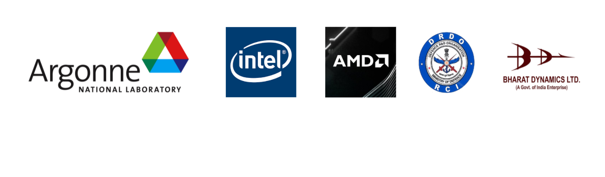

Technical InternshipsArgonne National Laboratory, Lemont, IL, USAResearch Aide/Intern - Sept ’21 - Nov ’21 Interned in the Data Science Research Group in Leadership Computing Facility. Working on a project titled Searching for Sparse and Mixed Precision Quantized Networks using Neural Architecture Search for Ampere 100 Tensor Cores. Manager: Murali Emani Intel Corporation, Santa Clara, CA, USADeep Learning Research Intern - June ’20 - Dec ’20 Worked as a Research Scientist Intern in the Graphics Processing Research Lab. Worked on CNN model optimization and efficient hardware execution for Graphics related problems. Manager: Sreeni Kothandaraman Advanced Micro Devices (AMD), Austin, TX, USAMachine Learning Intern - May ’19 - Aug ’19 Worked in the GPU (MIGraphX) team to develop compression algorithms for reducing the bit precision of the Neural Network models. Developed low bit (Int8) quantization algorithms for popular CNN models like Vgg16, ResNet50, Inception for efficient inference on AMD GPUs. Manager: Mike Vermeulen Research Center Imarat, Defence Research and Development Organization (DRDO), Hyderabad, IndiaUndergraduate Technical Intern - May ’16 - June ’16 Worked on the project entitled “Design of Ethernet Controller on FPGA.” Designed and simulated the transmitter and receiver of Ethernet controller on FPGA using Verilog HDL adhering to the IEEE 802.3 standards and Ethernet controller communication protocol. Bharat Dynamics Limited, Hyderabad, IndiaUndergraduate Technical Intern - Dec ’15 Worked on the project entitled “Missile Launcher Coordinator Unit" and studied the functioning of Missile and its Launcher. The Coordinator Unit (PCB) is the heart of the Launcher. Assembled various components and sections of the unit and tested with respect to different inputs. Also, measured the performance in different dynamic and environmental conditions varying from -50° C to + 50° C  |